03 · 安装与使用¶
1. 安装¶
推荐按以下顺序选择，优先使用官方桌面应用：
| 顺序 | 方式 | 适合 | 跳转 |
|---|---|---|---|
| 1 | Claude 桌面应用（Windows / macOS） | 大多数用户，图形界面，开箱即用 | 桌面应用 |
| 2 | VS Code 插件 | 主要在 VS Code 中写代码 | VS Code 插件 |
| 3 | 命令行版（Windows / macOS / Linux / WSL） | 习惯终端、需要在 WSL 或服务器中使用 | 命令行版 |
三种方式使用同一个账号，可以同时安装、按需切换。
方式一：Claude 桌面应用（推荐）¶
官方桌面应用内置了 Claude Code（即 Code 标签页），无需另外安装命令行工具。
下载： 打开官方下载页 claude.ai/download，或直接下载：
| 系统 | 下载链接 |
|---|---|
| Windows（x64，大多数电脑） | Claude Setup for Windows x64 |
| Windows（ARM64） | Claude Setup for Windows ARM64 |
| macOS（Intel 与 Apple 芯片通用） | Claude for macOS |
使用：
- 安装并打开 Claude，登录账号；
- 点击顶部的 Code 标签页；
- 点击 + New（Windows 快捷键
Ctrl + N，macOS 为Cmd + N）； - 在输入框下方选择项目文件夹、权限模式和模型；
- 输入任务，按
Enter发送。
Note
桌面应用通过系统网络联网，请在代理客户端中打开 系统代理 并选择 规则模式（见 01 章）。如果 Code 会话仍然连不上，按 02 章 · Claude Code 专用配置 补充代理设置。
部分功能（如并行会话隔离）需要 Git：Windows 用户可安装 Git for Windows；macOS 一般自带，可在终端执行 git --version 确认。
方式二：VS Code 插件¶
- 在 VS Code 扩展商店搜索 Claude Code，安装 Anthropic 官方发布的插件；
- 点击侧边栏的 Claude 图标，按提示登录；
- 打开项目文件夹即可开始对话。
插件读取的是 Windows 用户环境变量，因此按 02 章 配置代理后，需完全退出 VS Code 再重新打开。
方式三：命令行版¶
| 系统 | 跳转 |
|---|---|
| Windows（PowerShell） | Windows |
| macOS / Linux / WSL | macOS / Linux / WSL |
Windows¶
备选方式：winget install Anthropic.ClaudeCode
Note
原生 Windows 命令行版需预先安装 Git for Windows，Claude Code 通过其附带的 Bash 执行命令。
macOS / Linux / WSL¶
备选方式（macOS）：brew install --cask claude-code
验证安装：
2. 登录¶
桌面应用 / VS Code 插件： 按界面提示登录即可。
命令行版：
首次启动会打开浏览器进行登录。Pro / Max 订阅用户选择 Claude 账号登录；API 按量计费用户选择 Console 账号。
3. 登录后：让 Claude 帮你把网络配完¶
登录成功后，你的第一个任务可以交给 Claude 自己完成：让它把 Claude Code 的代理配置写好，并把代理软件调整为 TUN 模式 + 防 DNS 泄露 + 国内与学校网站直连。这样以后无论从哪个终端、哪个应用使用 Claude，网络都是一致的。
-
确认你的代理端口：在 Clash Verge Rev 的“设置”页找到 混合代理端口（默认
7897），方法见 01 章。 -
复制下面整段提示词，把
7897换成你的端口、把hkust-gz.edu.cn换成你学校的域名（没有可以删掉这一行），然后发给 Claude：请帮我完成以下网络配置。每一步修改前先备份原文件，改完告诉我改了什么。 1. 编辑 ~/.claude/settings.json（Windows 为 C:\Users\<用户名>\.claude\settings.json， 不存在就新建）。保留文件中已有的配置，只合并加入： { "env": { "HTTP_PROXY": "http://127.0.0.1:7897", "HTTPS_PROXY": "http://127.0.0.1:7897" } } 2. 找到 Clash Verge Rev 的全局扩展配置文件（Merge），在其中加入以下内容， 已有同名字段的话合并而不是覆盖： - 开启 TUN：tun.enable: true，stack: mixed，auto-route: true， auto-detect-interface: true，strict-route: true，dns-hijack: [any:53] - 防 DNS 泄露：dns.enable: true，enhanced-mode: fake-ip，ipv6: false， respect-rules: true；nameserver 使用 https://1.1.1.1/dns-query 和 https://8.8.8.8/dns-query；proxy-server-nameserver 与 default-nameserver 使用 223.5.5.5；nameserver-policy 中让 geosite:cn 使用 https://223.5.5.5/dns-query - 直连规则：用 prepend-rules 在最前面加入 DOMAIN-SUFFIX,hkust-gz.edu.cn,DIRECT DOMAIN-SUFFIX,edu.cn,DIRECT GEOSITE,cn,DIRECT GEOIP,CN,DIRECT 并把 +.hkust-gz.edu.cn 加入 dns.fake-ip-filter 3. 全部改完后，不要重启代理软件，列出我接下来需要手动完成的步骤。 -
Claude 改完后，按顺序收尾：
- 运行
stop-all-claude.bat终止所有 Claude 进程（修改代理前必做，原因见 04 章）； - 在 Clash Verge Rev 中：设置 → 虚拟网卡模式（TUN） 打开。首次开启需要先点旁边的按钮安装 服务模式；
- 在 订阅 页面重新应用当前配置，或重启 Clash Verge Rev；
- 按 01 章 · 检测网站 检查：出口 IP 是你固定的节点、DNS 检测没有出现本地运营商、学校网站可以正常打开；
- 重新打开 Claude，能正常对话即完成。
- 运行
Note
这一步需要 Claude 修改你电脑上的配置文件，它会逐项请求你确认，看清楚再批准。如果你用的不是 Clash Verge Rev（例如 v2rayN），把提示词第 2 步里的软件名换成你用的软件，Claude 会按对应的格式修改。
Tip
想让更多学校网站或内网直连，以后随时可以对 Claude 说：“把 xxx.edu.cn 加入 Clash 的直连规则”。
4. 基本操作¶

快捷键¶
| 按键 | 作用 |
|---|---|
Esc |
中断 Claude 当前操作 |
Esc Esc |
回退到之前的某条消息 |
Shift + Tab |
切换模式：普通 → 自动接受编辑 → Plan 模式（仅规划，不修改） |
@文件名 |
将指定文件加入上下文 |
!命令 |
直接执行 shell 命令 |
连按两次 Ctrl + C |
退出 |
斜杠命令¶
| 命令 | 作用 |
|---|---|
/init |
扫描项目并生成 CLAUDE.md（新项目建议首先执行） |
/clear |
清空上下文，开始新话题 |
/compact |
压缩上下文，保留要点 |
/model |
切换模型 |
/resume |
恢复历史会话 |
/permissions |
管理免确认的命令 |
/usage |
查看用量 |
/help |
查看全部命令 |
命令行参数¶
claude "解释这个项目" # 携带初始问题启动
claude -c # 继续最近一次会话
claude -r # 选择历史会话恢复
claude -p "总结 README" # 非交互模式，输出结果后退出
5. 任务描述建议¶
1. 先理解，不修改： 阅读这个项目，说明入口、结构和测试命令，暂不修改文件。
2. 明确验收标准： 为登录接口补充单元测试，覆盖密码错误和 token 过期，完成后运行 npm test。
3. 要求自查： 审查刚才的改动，列出尚未覆盖的边界情况。
Tip
对于较大的改动，建议先按 Shift+Tab 进入 Plan 模式，确认方案后再执行。
6. CLAUDE.md¶
放置在项目根目录，每次启动时自动读取，用于记录项目约定：
全局偏好可写入 ~/.claude/CLAUDE.md，对所有项目生效。
7. 进阶功能¶
| 功能 | 说明 | 文档 |
|---|---|---|
| MCP | 接入浏览器、数据库、GitHub 等外部工具 | MCP |
| Hooks | 在特定事件触发时自动执行命令 | Hooks |
| Subagents | 将子任务分派给独立的子代理 | Subagents |
| Skills | 封装可复用的工作流程 | Skills |
| IDE 集成 | 在 VS Code / JetBrains 中使用 | IDE |
留言板
全站所有页面共用这一个留言板，欢迎在这里提问、分享经验、指出错误。登录 GitHub 即可留言，请勿贴出公网 IP、订阅链接或证件信息。